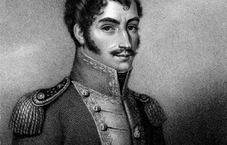

Lezione 15  L’indipendenza dell’America Latina
L’indipendenza dell’America Latina

Durante la prima metà del XIX secolo, in un arco di tempo relativamente breve, scoppiarono, in modo quasi simultaneo in tutta l’America Latina, una serie di moti rivoluzionari, che resero indipendente l’intero continente. Dopo tre secoli di dominazione spagnola l’America del Sud smise di essere una terra coloniale e iniziò una nuova tappa della sua storia. Sono interessanti le caratteristiche di simultaneità e universalità di questo processo indipendentista, in specie se si tiene conto delle difficoltà di comunicazione tra le colonie, dovute a grandi ostacoli naturali del continente americano: imponenti montagne, pianure e deserti, selve impenetrabili, grandi fiumi. All’interno del continente, così come tra colonie e madrepatria, i viaggi erano lunghi e lenti, le notizie e le informazioni arrivavano con difficoltà. Alcune caratteristiche generali del contesto storico possono aiutare a spiegare il processo di indipendenza ispanoamericano, il suo vigore, la violenza e la simultaneità con cui si manifestò, al di là degli avvenimenti e delle situazioni specifiche di ogni regione. Lo storico Nelson Martínez Díaz scrive che «i moti rivoluzionari scoppiati nell’America spagnola si inseriscono nel quadro di quelle che oggi chiamiamo rivoluzioni borghesi. Iniziate con la conquista dell’indipendenza da parte delle colonie inglesi dell’America del Nord nel XVIII secolo, sono continuate con la Rivoluzione francese, e con il movimento di emancipazione ispanoamericana all’inizio del secolo XIX. Proseguirono fino alla metà del secolo con le rivoluzioni europee del 1830 prima e del 1848 dopo» (Díaz, La independencia Hispanoamericana, 1989). Furono, quelli precedenti l’indipendenza dell’America Latina, anni di fermento ideologico liberale: nell’ambiente intellettuale si erano diffusi i valori dell’Illuminismo del Vecchio Mondo, circolavano i libri di Voltaire, Montesquieu, Rousseau; le opere di Tom Paine e di Franklin, i discorsi di John Adams e di Washington. «Molti precursori e leader dell’indipendenza visitavano gli Stati Uniti, mentre Londra divenne il centro di una vera Internazionale rivoluzionaria» (Díaz, 1989). La minoranza creola intellettuale, numerosi giovani creoli, viceré e altri funzionari, membri delle classi lavoratrici e dei commerci, personale universitario ed ecclesiastico furono ricettivi a queste idee. La grande massa degli americani, invece, aveva obiezioni e contestazioni contro il regime coloniale più pragmatiche che ideologiche (Lynch, Las revoluciones hispanoamericanas, 1808-1826, 1976). Tutto questo contribuì a modellare una coscienza rivoluzionaria e a definire una identità nazionale.